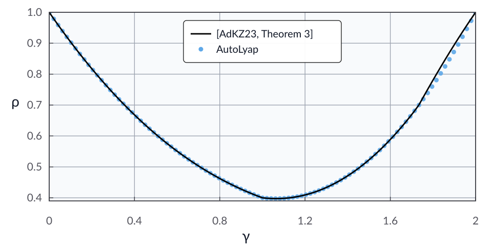

The gradient method: Gradient-dominated and smooth
Problem setup
Consider the unconstrained minimization problem
where \(f : \calH \to \reals\) is \(\mu_{\textup{gd}}\)-gradient dominated and \(L\)-smooth with \(0<\mu_{\textup{gd}}\le L\). This setting is not necessarily convex.
For an initial point \(x^0 \in \calH\) and step size \(0 < \gamma < 2/L\), the gradient update is
In this example, we search for the smallest contraction factor \(\rho\in[0,1)\) provable using AutoLyap such that
where
Model the problem in AutoLyap and search for the smallest rho
\(f\) is modeled as an intersection of
GradientDominatedandSmooth.The optimization problem is represented by
InclusionProblem.The update rule is represented by
GradientMethod.Function-value parameters are obtained with
IterationIndependent.LinearConvergence.get_parameters_function_value_suboptimality.The contraction factor is searched with
IterationIndependent.LinearConvergence.bisection_search_rho.
Run the iteration-independent analysis
This example uses the MOSEK Fusion backend (backend="mosek_fusion").
Install the optional MOSEK dependency first:
pip install "autolyap[mosek]"
import math
from autolyap import SolverOptions
from autolyap.algorithms import GradientMethod
from autolyap.problemclass import GradientDominated, InclusionProblem, Smooth
from autolyap.iteration_independent import IterationIndependent
def rho_theory_theorem3_specialized(mu_gd: float, L: float, gamma: float) -> float:
# Theorem 3 in abbaszadehpeivasti2023conditionslinearconvergence,
# specialized to the L-smooth (possibly nonconvex) setting via mu = -L.
threshold_1 = 1.0 / L
threshold_2 = math.sqrt(3.0) / L
if gamma < threshold_1:
discriminant = 4.0 * L * L - (
2.0 * L * (L + mu_gd) * mu_gd * gamma * (2.0 - L * gamma)
)
discriminant = max(discriminant, 0.0)
numerator = mu_gd * (1.0 - L * gamma) + math.sqrt(discriminant)
denominator = 2.0 * L + mu_gd
return (numerator / denominator) ** 2
if gamma <= threshold_2:
return 1.0 - (mu_gd * gamma * (4.0 - (L * gamma) ** 2)) / (2.0 + mu_gd * gamma)
numerator = (L * gamma - 1.0) ** 2
denominator = numerator + mu_gd * gamma * (2.0 - L * gamma)
return numerator / denominator
mu_gd = 0.5
L = 1.0
gamma = 1.0
problem = InclusionProblem(
[
[GradientDominated(mu_gd=mu_gd), Smooth(L=L)], # f in intersection
]
)
algorithm = GradientMethod(gamma=gamma)
solver_options = SolverOptions(backend="mosek_fusion")
# License-free option:
# solver_options = SolverOptions(backend="cvxpy", cvxpy_solver="CLARABEL")
P, p, T, t = IterationIndependent.LinearConvergence.get_parameters_function_value_suboptimality(
algorithm,
tau=0,
)
result = IterationIndependent.LinearConvergence.bisection_search_rho(
problem,
algorithm,
P,
T,
p=p,
t=t,
solver_options=solver_options,
)
if result["status"] != "feasible":
raise RuntimeError("No feasible Lyapunov certificate in the requested rho interval.")
rho_autolyap = result["rho"]
rho_theory = rho_theory_theorem3_specialized(mu_gd=mu_gd, L=L, gamma=gamma)
print(f"rho (AutoLyap): {rho_autolyap:.8f}")
print(f"rho (theory): {rho_theory:.8f}")
In the \(L\)-smooth (possibly nonconvex) setting, we can specialize [AdKZ23, Theorem 3] by setting \(\mu=-L\). This gives the reference rate \(\rho_{\textup{AdKZ}}\):
We then sweep \(\gamma \in (0,2)\) with \(\mu_{\textup{gd}}=0.5\) and \(L=1\). In the plot below, the black curve is \(\rho_{\textup{AdKZ}}\), while the blue markers are AutoLyap certificates.
Numerically, AutoLyap gives tighter rates for \(\gamma \in (1.74,2)\). One plausible reason is that [AdKZ23, Theorem 3] does not use interpolation conditions at solutions \(x^\star \in \Argmin_{x\in \calH} f(x)\) when passing from (7) to (10), which introduces a source of a priori conservatism.
{kind=link}

References
Hadi Abbaszadehpeivasti, Etienne de Klerk, and Moslem Zamani. Conditions for linear convergence of the gradient method for non-convex optimization. Optimization Letters, 17(5):1105–1125, 2023. doi:10.1007/s11590-023-01981-2.